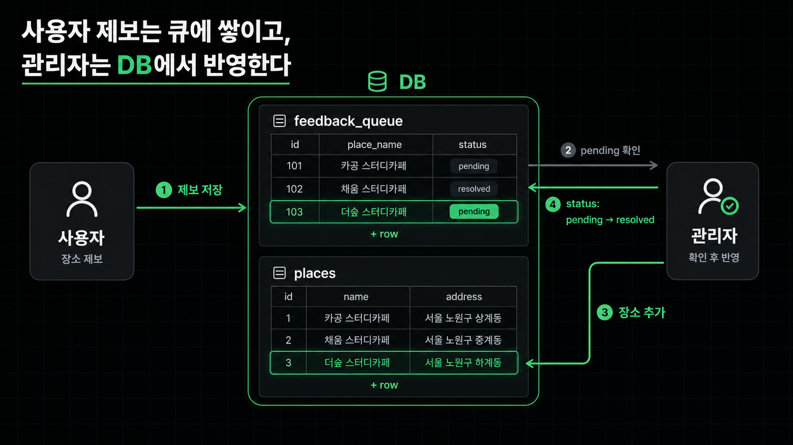
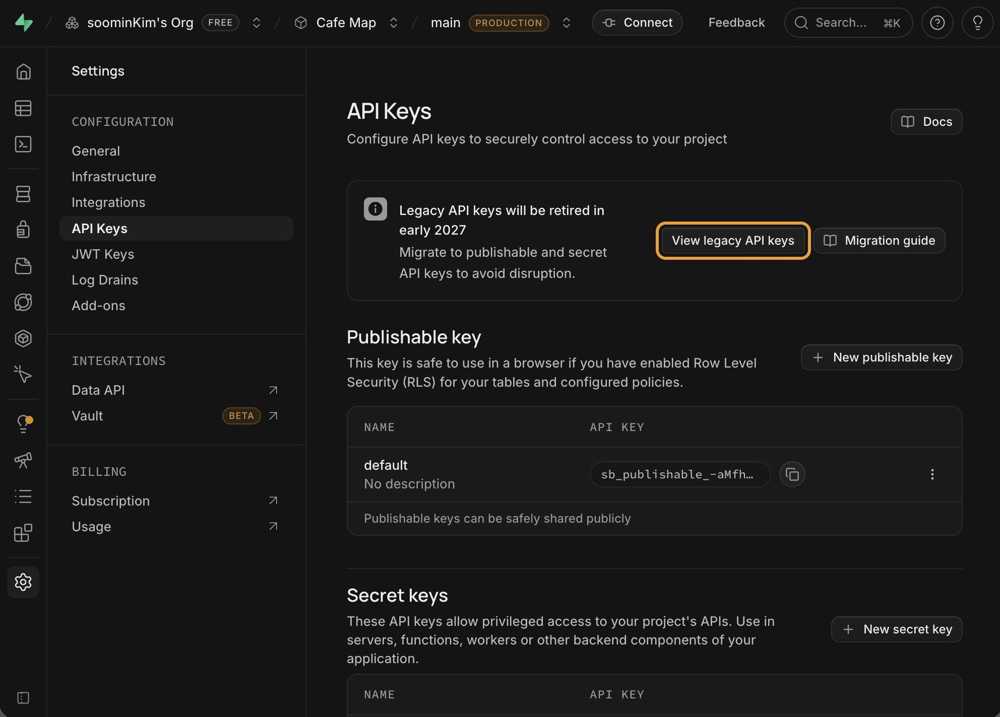
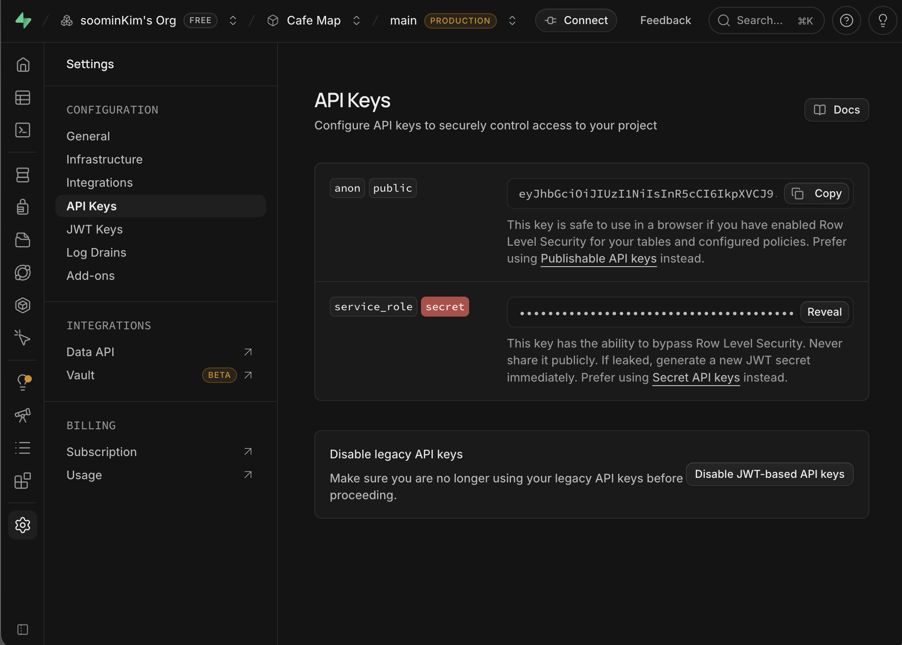
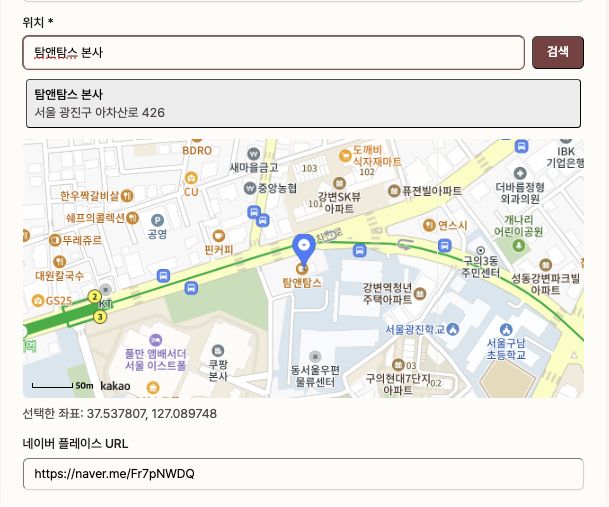

관리자 화면 개발
관리자 페이지 개발하기 — 제보 처리와 장소 관리
제보 화면과 장소 관리 화면을 나누고, 사용자 요청을 검증된 장소 데이터로 반영합니다.
느좋카페에 사용자가 카페를 제보할 수 있는 간단한 기능을 먼저 만들어줘. - 로그인한 사용자가 새 카페를 제보하거나, 기존 카페 정보 수정을 요청할 수 있게 해줘 - 제보에는 네이버 지도 URL, 사진, 메모를 넣을 수 있게 하고, 제보자와 생성 시각을 함께 저장해줘 - 제보 내용은 바로 지도에 노출하지 말고, 운영자가 확인하기 전까지 대기 상태로 쌓이게 해줘
얻어갈 것
- 제보 화면과 장소 관리 화면을 왜 나눠야 하는지 이해합니다.
- 사용자가 보낸 요청을 검증된 장소 데이터로 반영하는 흐름을 잡습니다.
- 관리자 권한과 API 구현을 어디에 둬야 하는지 정합니다.
운영 화면을 나누는 이유
런칭 후에는 사용자가 보내는 요청과 실제 서비스에 노출되는 데이터가 함께 움직입니다. 이 둘을 한 화면에서 다루면 아직 검증하지 않은 입력이 바로 운영 데이터처럼 보일 수 있습니다.
그래서 관리자 화면은 처음부터 두 역할로 나누는 편이 좋습니다.
| 화면 | 역할 | 데이터 성격 |
|---|---|---|
| 제보 화면 | 사용자가 보낸 요청 확인 | 아직 검증되지 않은 입력 |
| 장소 관리 화면 | 지도에 노출되는 카페 관리 | 운영자가 확인한 데이터 |
권한에서 먼저 볼 것
관리자 화면은 기능보다 권한 경계가 먼저입니다. 일반 사용자가 관리자 화면에 들어오면 안 되고, 관리자 데이터도 권한 확인 전에 렌더되면 안 됩니다.
- 일반 사용자는 관리자 화면에 들어오면 안 됩니다.
- 관리자 데이터는 권한 확인 전에는 렌더하지 않습니다.
- 처음에는 내 계정 하나만 통과시키는 방식으로 좁게 시작합니다.
1. 제보 화면
제보 화면에서는 사용자가 보낸 요청을 확인하고 처리 상태를 바꿉니다. 여기서 핵심은 제보 내용을 바로 places에 넣지 않는 것입니다.
| 목록 | 볼 것 | 액션 |
|---|---|---|
| 새 카페 제보 | 제보자, 네이버 지도 URL, 사진, 메모, 생성 시각 | 승인, 반려, 장소 추가로 넘기기 |
| 정보 수정 요청 | 요청자, 대상 카페, 사진, 메모, 생성 시각 | 승인, 반려, 장소 수정으로 넘기기 |
운영자가 먼저 보고, 반영할 요청만 장소 관리 화면으로 넘깁니다.
2. 장소 관리 화면
장소 관리 화면에서는 실제 서비스에 노출되는 카페 데이터를 다룹니다. 제보 화면이 "확인하는 곳"이라면, 장소 관리 화면은 "실제 데이터를 고치는 곳"입니다.
| 기능 | 설명 |
|---|---|
| 장소 목록 | 현재 지도에 노출되는 카페를 확인 |
| 장소 추가 | 이름, 주소, 좌표, URL, 사진 업로드, 콘센트, 와이파이, 소음, 작업 적합도 입력 |
| 장소 수정 | 기존 장소 정보와 사진 추가·교체·삭제 |
| 노출 상태 | 확인 전인 장소를 숨기거나 보류 |
처음에는 삭제보다 비공개나 보류 상태가 더 안전합니다. 잘못 지운 데이터는 되돌리기 어렵기 때문입니다.

변경 작업은 서버에서 처리하기
- 관리자 화면에서는 단순히 데이터를 보는 것보다 승인, 반려, 장소 추가, 장소 수정처럼 중요한 변경 작업이 많습니다.
- 이 작업을 브라우저에서 Supabase API로 바로 처리하면 처음에는 빠르지만, 나중에 권한 조건이 늘어날수록 RLS 정책이 복잡해지고 버그를 찾기 어려워질 수 있습니다.
- 그래서 관리자 서버 로직은 브라우저에서 Supabase를 직접 부르지 않고, 별도의 API를 거쳐서 처리합니다.
| 구조 | 흐름 |
|---|---|
| as-is | 브라우저 → Supabase |
| to-be | 클라이언트 → API(Server Action) → Supabase |
- Server Action 안에서 관리자 권한을 다시 확인하고, 승인, 반려, 저장 같은 실제 변경 작업을 실행합니다.
- Supabase RLS는 유지하되, 운영 정책의 중심은 서버 코드에 둡니다.
/admin 기본 구조
/admin/reports: 제보 화면/admin/places: 장소 관리 화면shadcn/ui를 주요 UI 라이브러리로 사용합니다.
구현 프롬프트
아래 P1 프롬프트는 지금까지 나눈 구조를 한 번에 구현 요청으로 묶은 것입니다. 요구사항이 이미 구체적이니, 부록 B에서 배운 /superpowers:writing-plans로 넘겨 실행 가능한 작업 계획으로 나눈 뒤 구현합니다. 새로운 제보 기능을 다시 만드는 것이 아니라, 이미 들어온 요청을 운영자가 처리하고 장소 데이터에 반영하는 화면을 만드는 데 초점을 둡니다.
느좋카페에 관리자 운영 화면을 만들려고 한다 목표: - 제보 화면과 장소 관리 화면을 나눠서 만든다. - 사용자가 보낸 요청을 운영자가 확인한 뒤, 실제 지도에 노출되는 장소 데이터로 반영한다. 화면 구조: - /admin/reports: 새 카페 제보와 정보 수정 요청을 표로 보기 - /admin/places: 실제 지도에 노출되는 장소 목록, 추가, 수정 화면 만들기 제보 처리: - 제보 row를 누르면 사진, 메모, URL, 사용자, 생성 시각을 dialog로 보기 - 새 카페 제보를 승인하면 장소 추가 화면으로 이어지게 하기 - 정보 수정 요청을 승인하면 기존 장소 수정 화면으로 이어지게 하기 장소 관리: - 장소 추가/수정 화면에서 사진을 직접 업로드할 수 있게 하기 - 기존 사진을 추가, 교체, 삭제할 수 있게 하기 권한과 데이터 변경: - 내 계정(관리자 이메일)만 접근 가능하게 막기 - 승인, 반려, 장소 추가, 장소 수정은 클라이언트에서 Supabase를 직접 호출하지 않고 Next.js Server Action으로 처리하기 - Supabase RLS는 유지하되, 관리자 운영 정책은 서버 코드에서 관리하기 UI: - shadcn/ui를 주요 UI 라이브러리로 활용하기
/superpowers:writing-plans 명령어로 위 요구사항을 PRD 문서로 만들 수 있습니다.
Supabase Service Role Key 발급받기
- 관리자 Server Action은 승인, 반려, 장소 추가 같은 변경 작업을 서버에서 실행합니다. 이때 RLS 정책을 우회해 운영 데이터를 직접 바꿔야 하는 경우가 있는데, 이를 위해 Supabase의
service_role키가 필요합니다. - 일반 사용자에게 노출되는
anon키와 달리,service_role키는 모든 권한을 가지므로 서버에서만 사용해야 합니다. - Supabase 대시보드에서 Project Settings → API Keys로 들어가면
service_role키를 확인할 수 있습니다.


service_role 키를 복사합니다. 이 키는 외부에 노출되면 안 됩니다.복사한 키는 프로젝트의 .env.local 파일에 아래처럼 추가합니다. {{value 값 입력}} 자리에 복사한 키를 붙여 넣습니다.
SUPABASE_SERVICE_ROLE_KEY={{value 값 입력}}
지도 기반 장소 입력 추가하기
좌표를 숫자로 직접 넣는 건 운영자 입장에서 꽤 불편합니다. 카카오맵 SDK의 services 라이브러리를 쓰면 가게 이름으로 검색해서 고르는 방식으로 바꿀 수 있습니다.

좌표 입력이 운영자 입장에서 불편해서, kakao map sdk에서 지원해주는 장소 검색(services 라이브러리)을 따라서 지도 기능을 사용해보려고 한다. - 가게 이름으로 검색해서 나온 결과를 고르면 지도에 마커를 찍어줘 - 고른 장소의 좌표와 주소는 폼에 자동으로 채워줘 이미 쓰고 있는 카카오맵 SDK를 그대로 쓰고 새 지도 라이브러리는 추가하지 마.
마무리
- 제보 화면은 사용자가 보낸 정보를 확인하는 곳입니다.
- 장소 관리 화면은 실제 서비스 데이터를 고치는 곳입니다.
- 둘을 나누면 사용자 입력과 운영자가 검증한 데이터가 섞이지 않습니다.